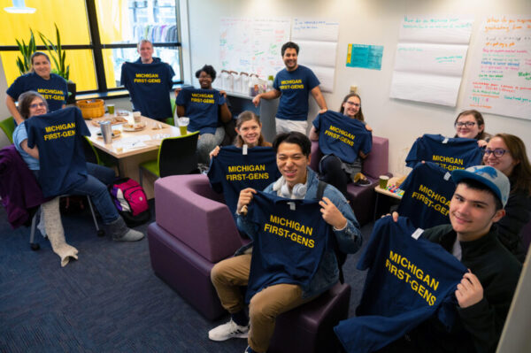
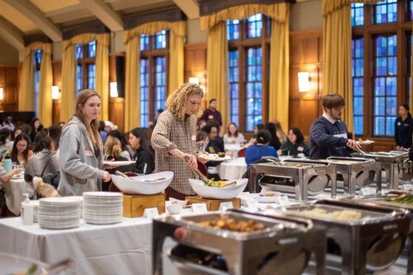

Am I a first-generation college student?
At the University of Michigan, undergraduates and graduate students are considered first-generation college students if neither parent or guardian has completed a 4-year college or university degree.
This definition includes students with other family members (siblings, cousins, grandparents, etc.) who have completed a four-year degree.
First-Generation Gateway Hours and Location:
Summer Hours: Monday – Friday 9:00 – 3:00 PM
Location:Third floor of the Student Activities Building in the Office of Academic Multicultural Initiatives.
Questions for the First-Gen Gateway Staff? Email us at firstgeninfo@umich.edu
First-generation student News
-
Who’s a ‘First-Gen’ Student? Here’s a New Look at a Complicated Question
-

University of Michigan Celebrates First-Generation College Students During Week-Long Events
-

First-generation U-M students gather for winter dinner
-
EMAIL
firstgeninfo@umich.edu
-
ADDRESS
3009 Student Activities Building 515 E. Jefferson, Ann Arbor, MI